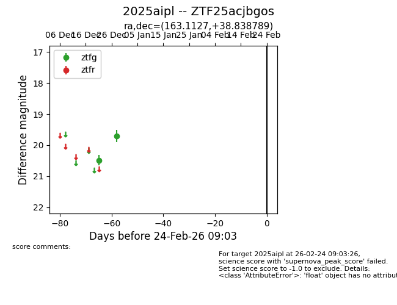
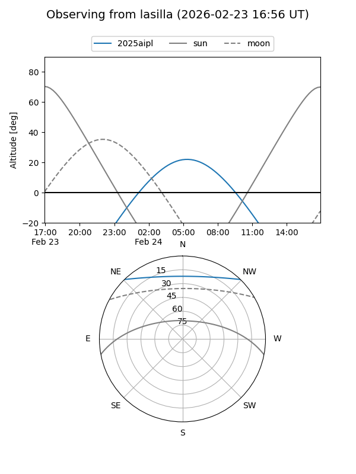
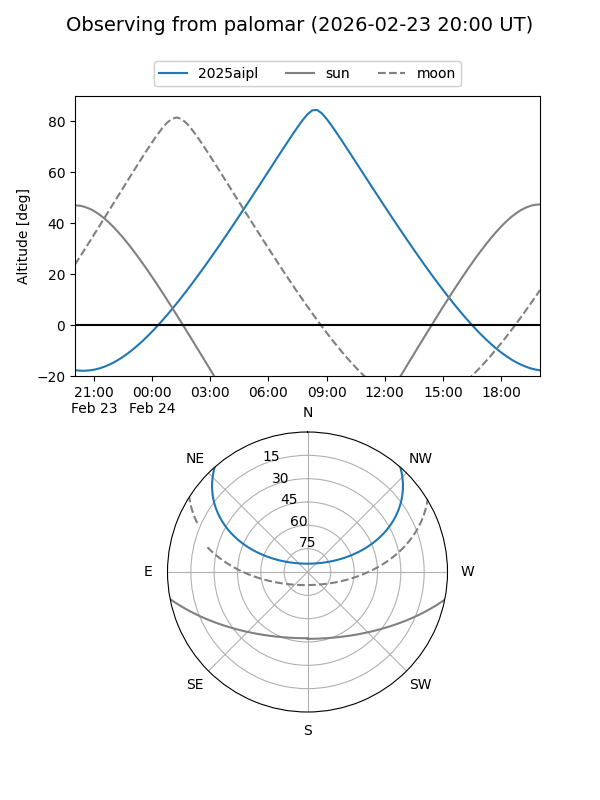

2025aipl
Target 2025aipl at 2025-12-30 10:52
Aliases and brokers:
FINK: fink-portal.org/ZTF25acjbgos
Lasair: lasair-ztf.lsst.ac.uk/objects/ZTF25acjbgos
ALeRCE: alerce.online/object/ZTF25acjbgos
TNS: wis-tns.org/object/2025aipl
YSE: ziggy.ucolick.org/yse/transient_detail/2025aipl
alt names
ZTF25acjbgos (ztf,fink_ztf)
2025aipl (tns,yse)
Coordinates:
equatorial (ra, dec) = 163.1127,+38.83879
equatorial (HMS+DMS) = 10:52:27.04,+38:50:19.64
galactic (l, b) = (180.0581,+62.60270)
Flags:
Photometry:
last ztfg=19.71
2 ztfg detections
Lightcurve

Visibility


Additional plots